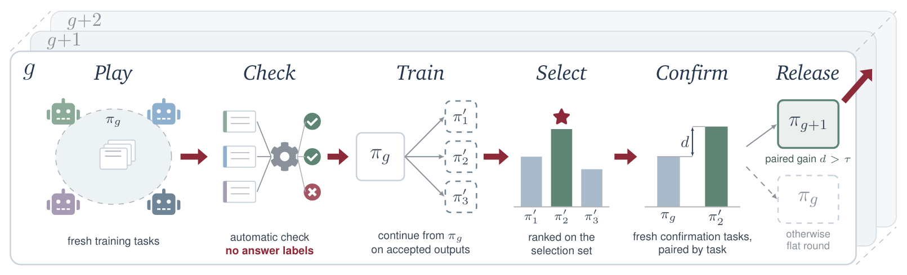

Recursive Collective Intelligence: Emergence on an Equal-Budget Ladder in Multi-Agent LLM Systems
Abstract
Large language models increasingly work as teams of agents, and a team is expected to solve problems beyond the reach of any single member. Most evaluations credit a team for outperforming a single agent, without accounting for the additional computation: a team may consume many times the tokens of one agent, and a plain vote over independent answers already explains most of the reported gain. Two questions therefore remain open: when does interaction itself make a group smarter, and can a group improve its next generation by learning from its own work? We answer both with the equal-budget ladder, which grades a group against independent agents at three levels: outperforming a single agent, a compute-matched majority vote, and compute-matched pass@n. On this ladder we define Recursive Collective Intelligence (RCI) as a group whose own output, without a teacher or external labels, makes its next generation smarter at equal cost. Three findings follow. First, interaction improves collective intelligence when it moves information across agents: forwarding split facts lifts groups above pass@n by up to 31 percentage points across three model scales. Second, organization emerges spontaneously: identical 27B agents form hubs and improve accuracy by 18 percentage points; encoding their organization in a prompt enables them to reach level 3 at less than half the token budget in a descriptive comparison. Third, groups recursively improve themselves: two generations of label-free training progressively climb the ladder, with the second 9B generation surpassing both pass@n and a control trained on base-model turns. A group therefore outperforms its members when it forwards useful information more efficiently than it spends tokens on coordination, and learns to do so from its own work.
Two concepts, animated
Method
A group that spends the tokens of nB independent agents is compared with those agents. No vote, judge or verifier that selects among independent answers can exceed pass@n, so a group at level 3 must have produced correct answers through what its members exchanged.



Results


Try the ladder yourself
Choose what agents see, what they exchange and how they organize, and see the token budget, accuracy, ladder level and information flow. Every option is a measured configuration from the paper.
Citation
@article{he2026rci,
title = {Recursive Collective Intelligence: Emergence on an
Equal-Budget Ladder in Multi-Agent LLM Systems},
author = {He, Lixuan and Cai, Shengqu and Wu, Fang and Zheng, Shikang and
Jiang, Liwei and Li, Manling and Ma, Yi and Fei-Fei, Li and
Guibas, Leonidas and Wetzstein, Gordon and Choi, Yejin and
Hong, Yining},
year = {2026}
}